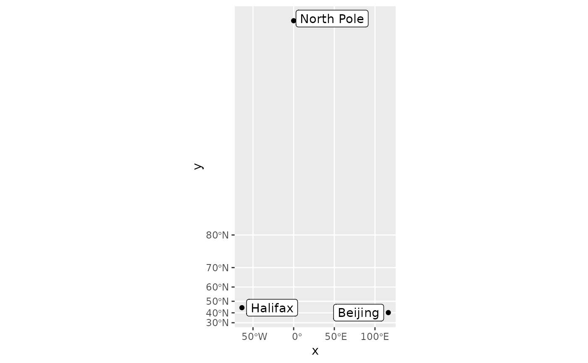

These layers are much like their counterparts, stat_identity,
geom_point, geom_path,
and geom_polygon, except they have a crs argument that
ensures they are projected when using coord_sf. Stats are applied to the x and y coordinates
that have been transformed.
stat_spatial_identity(
mapping = NULL,
data = NULL,
crs = NULL,
geom = "point",
position = "identity",
...,
show.legend = NA,
inherit.aes = TRUE
)
geom_spatial_point(mapping = NULL, data = NULL, crs = NULL, ...)
geom_spatial_path(mapping = NULL, data = NULL, crs = NULL, ...)
geom_spatial_polygon(mapping = NULL, data = NULL, crs = NULL, ...)
geom_spatial_text(mapping = NULL, data = NULL, crs = NULL, ...)
geom_spatial_label(mapping = NULL, data = NULL, crs = NULL, ...)
geom_spatial_text_repel(mapping = NULL, data = NULL, crs = NULL, ...)
geom_spatial_label_repel(mapping = NULL, data = NULL, crs = NULL, ...)An aesthetic mapping created with ggplot2::aes().
A data frame or other object, coerced to a data.frame by ggplot2::fortify().
The crs of the x and y aesthetics, or NULL to use default lon/lat crs (with a message).
The geometry to use.
The position to use.
Passed to the combined stat/geom as parameters or fixed aesthetics.
See ggplot2::layer().
cities <- data.frame(
x = c(-63.58595, 116.41214, 0),
y = c(44.64862, 40.19063, 89.9),
city = c("Halifax", "Beijing", "North Pole")
)
library(ggrepel)
ggplot(cities, aes(x, y)) +
geom_spatial_point(crs = 4326) +
stat_spatial_identity(aes(label = city), geom = "label_repel") +
coord_sf(crs = 3857)
#> Assuming `crs = 4326` in stat_spatial_identity()
